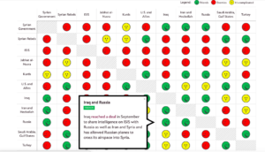

Link: http://www.slate.com/blogs/the_slatest/2015/10/06/syrian_conflict_relationships_explained.html
What data is being shown: The relationship between each “player” in the Syria conflict. The players are either countries/governments, alliances of countries, or militant groups. Relationship is represented as a categorical variable with the following categories: “Friends”, “It’s Complicated”, or “Enemies”.
Who you think the audience is: This presentation was published in 2015, four years after the conflict began in 2011, and shows the data in such a simplistic way. From this, one can infer it is meant for readers who haven’t been following the conflict in Syria and want to get up to speed about who is involved and where they stand with each other. It does have small explanations for each relationship if the reader chooses to mouse over a particular square in the chart, but it is not meant for someone who wants to know all the details or an in-depth analysis of the war. Additionally, it is probably meant mainly for Americans since it is written in English and refers to the “US and allies.”
What do you think the goals of the presentation are: Educate the public on a complicated issue that is prominent in a lot of U.S. military decisions. Since the issue is confusing with so many different players and interests, the presentation tries to make the information as accessible as possible so people will actually educate themselves on the conflict rather than give up because keeping track of all the details is a headache. Perhaps another goal or desired result of this goal is for people to make more informed decisions when they vote; however, this presentation seems objective and factual, so swaying political leanings is most likely not one of its goals.
Whether you think it is effective: I think it is effective because 1) it summarizes the complicated relationships in such a way that the audience can see everything laid out at once. This makes comparison easier and allows the audience to easy select the relationships they are interested in learning more about. 2) It has three color-coded categories and only displays words when the audience decides to learn more. This makes consuming the information simpler and more effective because the reader isn’t overwhelmed with text or too many icons to decipher. Overall, I think the presentation accomplishes the goal of educating people on the topic without giving them so much information that they can’t quickly synthesize or remember most of it.